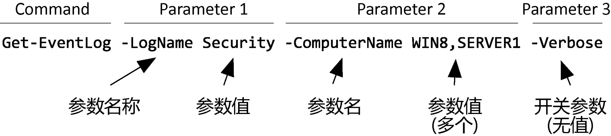

初识
PowerShell，从名字就可以看出它至少是一个 shell 工具，类似于 Linux 的 bash。但它不仅仅于此，引用官方定义是：
PowerShell 是一种跨平台的任务自动化解决方案，由命令行 shell、脚本语言和配置管理框架组成。
为什么要使用任务自动化解决方案？
GUI 操作只能简化使用，并不能带来效率提升。而使用任务自动化解决方案工具，可以“无差异且快速”执行重复的任务。为什么选择 PowerShell？
起初 PowerShell 只为 Windows 管理员提供自动化管理功能，如果我们不在 Windows 系统下工作，似乎没有理由学习使用 PowerShell。
而且，随着微软推出 Linux 子系统，使得在 Windows 中使用 bash 成为可能。为了一致性，我们更有理由使用 bash 而不是 PowerShell。
But，孩子，你还是太莲青了！微软怎么会让这种状况出现呢？
随着 Win7、Win10、Win11 等系统版本的推进，微软命令行工具逐步过渡到了 PowerShell。而且，PowerShell 还从 Windows “专用”转而成为“全平台”工具——Windows、Linux、MacOS 皆可使用。从此，情况开始反转了，为了维护的一致性，我们反而应该考虑使用 PowerShell 了。
微软已将 PowerShell 在 GitHub 开源。微软网站也可以查看丰富的 PowerShell 文档。
如果你使用的是较新的 Windows 系统，比如：Win10、Win11，PowerShell 是内置的，不需要特别安装，除非你想要使用更新版本中的特性。
微软文档中有详尽的安装说明可供参考，这里就不赘述了。
有了 PowerShell 启动它就很简单了，在 cmd 窗口执行 powershell 或 pwsh 命令就可以启动进入 PowerShell 交互环境。
当然，也可以在开始菜单的程序列表中找到 PowerShell 程序启动。
但是，如果你工作在较新的 Windows 系统版本下，比如：Win10或以上，那么笔者认为的最佳实践是：在 Windows Terminal 中使用 PowerShell。
Windows Terminal 是微软新推出的终端程序，推荐用户在新版本系统中使用它。
Windows Terminal 启动后，通常默认工作在 PowerShell 交互环境下（当然这是可配置的）。
上手
首先，我们应该清楚自己正工作在什么 PowerShell 版本下。通过查看 $PSVersionTable 可以知道：
1 | > $PSVersionTable |
那到底要怎么入手使用 PowerShell 呢？
对于一个命令行工具而言，最有效的学习方法就是查看其内置帮助。
从内置帮助开始学习 PowerShell 有两个核心抓手：Get-Command 和 Get-Help。前者用于查找命令，后者常用于查看命令的帮助。
初探帮助系统
因此，我们可以通过执行 Get-Help 命令查看帮助系统说明。
1 | # 查看帮助说明 |
从说明中可以了解到，PowerShell 不包含帮助文件，我们最好运行 Update-Help 命令将帮助文件下载到本地以便查看。
更新帮助文档命令可能会由于“无法更新带有 UI 区域性”等原因报错。
忽略错误或许是一个不错的选择Update-Help -ErrorAction SilentlyContinue。
如果你有多台主机需要更新，从网络下载并不是一个快速的选择。事实上，我们只需要更新一台主机，然后将帮助文件导出到本地，再导入到其他主机即可。
1 | # 保存帮助文件到本地目录 |
可能你的电脑上安装了多个版本的 PowerShell，比如笔者目前就有 3 个版本：系统内置版 5.1、最新正式版 7.2.3、最新预览版 7.3.0-preview.3。需要注意的是不同版本间的帮助文档是相互独立的。
现在，我们可以通过 Get-Command 和 Get-Help 来探索帮助文档了。
使用
Get-Help甚至可以查看Get-Command乃至Get-Help自身的帮助文档。
我们学习命令的使用前，应该先了解与 PowerShell 相关的一些基础知识。
而这些基础知识我们仍然可以通过帮助系统获得，PowerShell 包含大量的概念性（关于）帮助主题，可以通过 About 开头的帮助主题访问它们。
1 | Get-Help About_* |
何为命令
通常，我们在 PowerShell 中执行的都是命令，但是“命令”只是一个笼统的概念，它主要包括：
- Cmdlet，读作 command-let，用 .Net 语言编写
- 函数，用脚本语言编写
- 工作流，嵌入 PowerShell 工作流执行系统的一类特殊函数
- 应用程序，即外部的应用程序
注意，PowerShell 的命令是大小写不敏感的。
日常使用中，Cmdlet 最为常见。因此，我们从 Cmdlet 入手。
Cmdlet概述
Cmdlet的格式
Cmdlet 是有固定格式的，即以“动词-名词”的形式出现，比如：Get-Command、Get-Help 都是 Cmdlet。
根据操作对象不同，Cmdlet的“名词”部分各不相同，但是“动词”部分通常是从动词列表中选取的。查看动词列表使用命令 Get-Verb。
格式固定再加上“动词”限定，使得猜测 Cmdlet 名称成为可能。
再加上参数，完整的 Cmdlet 形式如下所示：

中括号与参数分类
即使你明白了上面的示例，在通过 Get-Help 查看命令语法时可能还是会疑惑。因为参数可能总是置于很多 []（中括号）中。比如：
1 | > Get-Help Get-Command |
可选参数
参数名及其形参都置于 [] 中的是可选参数，比如：[[-Name] <System.String[]>]，否则为必选参数。
注意：外层的中括号表示“可选”。
位置参数
仅参数名置于 [] 中的是位置参数，比如：[[-Name] <System.String[]>]。
注意：内层的中括号表示该参数为“位置参数”，外层中括号表示“可选”。该参数既是可选参数，也是位置参数。
开关参数
开关参数（Switch Parameter），没有参数值，指定参数则值为 $True，否则值为 $False。比如：-ALL。
注意，开关参数都不是位置参数，所以其外侧的中括号代表它是可选的。
参数值
对于参数的值而言，最特殊的是开关参数，无需指定值。
普通参数一般是单值的，可以是数值、字符串等等类型。值得注意的是，字符串值不必使用单引号或双引号，除非其中包含了空格。
❔ 为什么 PowerShell 字符串可以不用引号？
字符串不需要使用单引号或双引号的原因在于，PowerShell 不存在变量与字面量的混淆，变量都是以$开头的。
如果参数是数组类型，则可以指定多个值，以英文逗号分隔。参数为字符串数组时，直接以 a, b, c 的形式传值即可。注意字符串整体和部分都不需要引号。
1 | # 字符串内容不带英文逗号，不必使用引号 |
注：字符串包含单/双引号时，需要进行转义，PowerShell 中的转义前缀为 `（数字 1 左侧按键）
别名
上面的示例中 echo 不是命名名称，它只是 Write-Output 命令的一个别名。
使用别名，一方面可以缩短键入的命令长度，提高效率；另一方面，使得从其他 Shell 环境切换而来的用户更易上手——因为别名通常是其他 Shell 环境下常用的命令名称。
Get-Alias 命令可以通过命令名查别名，也可以通过别名查命令名。
1 | # 查看命令的别名 |
不仅命令有别名，参数也可以有别名，参数别名包括：
- 简化参数名称
- 参数名称别名
- 位置参数
简化参数名称，PowerShell 不要求输入完整参数名，只要求输入参数名称的“最小可识别前缀”即可。
最小可识别前缀，包括两方面含义：
- 输入的参数字符串必须是完整参数名的一个前缀；
- 必须只能匹配一个参数，不能有二义性，否则错误。
简化参数名称，是一个命令行技巧，不应用在脚本中。
参数别名，为参数定义的别名，但是该别名不在帮助文件中列出，需要通过命令查询。
1 | (get-command get-eventlog | select -ExpandProperty parameters).ComputerName.aliases |
针对几乎所有问题，PowerShell 通常都能提供多种实现方式。
同一个命令可能有多个别名，因此可能外观上看起来执行的不同命令，其实本质上执行的还是同一个命令。
因此，是否为不同实现方式有时需要仔细辨别。
命令补全
PowerShell 命令名称通常较长，不利于命令行输入，所以为了提高输入效率，PowerShell 是具有补全能力的。
Tab 键可进行命令补全，通过Tab 及 Shift + Tab 可以在补全结果间切换，补全功能包括：
- 补全命令
- 补全命令参数名
- 补全命令参数候选值
- 补全路径
注意，也能补全参数别名，但是不会有信息说明补全的是别名还是完整参数名。
最佳实践
- 在 Windows Terminal 中使用 PowerShell。
- 查看内建的示例学习使用命令。
- 在脚本文件中应总是使用命令全称，以及参数全称。
这是为了脚本的可读性。
命令别名和参数别名应视为命令行技巧，是在熟悉的情况下，用于提升输入效率的。不应用于脚本中，以免降低脚本可读性和可维护性。 - 字符串最好使用单引号。
除非需要转义等情况。
小结
有了以上知识，现在可以开始自行探索 PowerShell 的世界了。😁